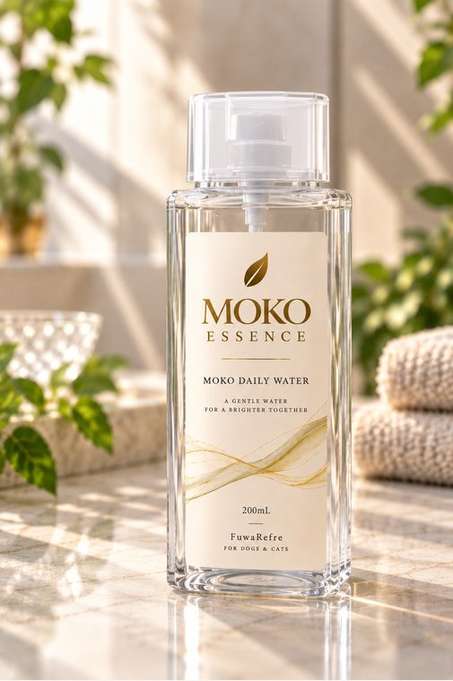

FEATURE
防災・災害時
限られた水を、暮らしのさまざまな場面に。
防災での活用イメージ
「断水時、10Lの水で何ができるか。」
飲む・洗う・拭く・暮らす。限られた水をさまざまな用途へ。
使い方の例
飲料水用の保管
災害時に備える飲料水として保管し、断水時の飲み水や調理用水として活用します。
1Lの水で洗髪
断水時など大量の水を使えない場面でも、1Lの水を使った洗髪に活用できます。限られた水で身体を清潔に保ちたい場面に役立ちます。
MOKOによる身体の拭き取り
入浴やシャワーが難しい状況で、MOKOを使った身体の拭き取りに活用します。避難生活や断水時の身体ケアに使用できます。
衣類の洗浄
下着・靴下・タオルなど、避難生活で必要となる衣類の洗浄や部分洗いに活用できます。
食器・調理器具の洗浄
断水時など水を大切に使いたい場面で、食器や調理器具の洗浄に活用できます。
身の回り品の洗浄
コップ、歯ブラシなど、避難生活で使用する身の回り品の洗浄に活用できます。
ペットの身体ケア
避難所や車中泊など、通常どおり洗うことが難しい犬・猫の拭き取りや部分洗浄などに活用できます。
MOKOによる空間・車内・靴などの消臭
避難スペース、車内、靴など、避難生活で気になりやすいニオイへの空間消臭にMOKOを活用できます。
実写真の事例・お客様の声
実写真の事例
準備中です。
お客様の声
準備中です。
掲載内容について
※具体的な保存期間など、数値を伴う性能表示については、設定する保管条件や表示内容に応じて別途整理します。